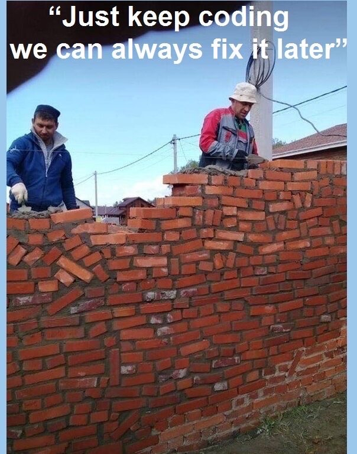

Software Development

From the first day of the semester forward we expect students (you) to visit this page once per 24 hours.
“To be any kind of professional means being willing to tell the client a truth he doesn’t want to hear.” – Holman W. Jenkins, Jr.
“I’m still friends with folks I worked with decades ago, many who would beat me up in meetings, ripping apart my arguments with what seemed like an ice pick. Still, they made me better.” – Andy Kessler
Wednesday, November 1st, 2023 2:16:48pm
Please check out the corrections and clarifications in 6 —
Wed Nov 1 20:40:41 EDT 2023 I pushed a second update.
Tuesday, October 31st, 2023 8:41:08pm
Code Walks for Wed, 1 November 2023
Presenters: Nicholas Mower, Aryan Kulkarni |
Head Reader: Eden Gugsa |
Assistant Reader: Ethan Feldman |
Secretary: Yechan Na |
|
Presenters: Matthew Stetter, Jay Martinez |
Head Reader: Jake Schissel |
Assistant Reader: Haiyi Jiang |
Secretary: Ethan Carpenter |
|
Presenters: Charles Roth |
Head Reader: Kevin Chen |
Assistant Reader: Jake Pine |
Secretary: Nicolas Araujo |
|
Presenters: George ElMassih, Oliver Toh |
Head Reader: shivam patel |
Assistant Reader: Rishan Annadurai |
Secretary: Ziyu (Skye) Wang |
|
Presenters: James Quinlivan, Joy Hutchison |
Head Reader: Ethan Mouri |
Assistant Reader: Euann Gu |
Secretary: George Doty |
|
Presenters: Richard Wang, Luke Taylor |
Head Reader: Ivan Berlin |
Assistant Reader: Jackson Terrill |
Secretary: Joseph Hirsch |
|
Presenters: Maxwell Pirtle, Nolan Lemery |
Head Reader: Joseph DiSpirito |
Assistant Reader: Laurel Parsons |
Secretary: Josiah Borgstede |
Monday, October 30th, 2023 6:37:13am
Code Walks for Mon, 30 October 2023
Presenters: Nicholas Mower, Aryan Kulkarni |
Head Reader: Kevin Li |
Assistant Reader: Sanat Shajan |
Secretary: Moe Thu |
|
Presenters: Taiga Wad, Angela Shen |
Head Reader: Eden Gugsa |
Assistant Reader: Ethan Feldman |
Secretary: Yechan Na |
|
Presenters: Wilson Glass, Dilan Piscatello |
Head Reader: Daniel Allex |
Assistant Reader: George ElMassih |
Secretary: Jasmine Lai |
|
Presenters: Shashank Jarmale, Nikhil Goel |
Head Reader: Lucas Martin Sanchez Sta Maria |
Assistant Reader: Luke Jianu |
Secretary: Miles Vollmer |
|
Presenters: Ilyas El Haroui, George Doty |
Head Reader: Luke Taylor |
Assistant Reader: Maxwell Pirtle |
Secretary: Nolan Lemery |
|
Presenters: Tyler Chung, Priya Aggarwal |
Head Reader: Richard Wang |
Assistant Reader: James Quinlivan |
Secretary: Smit Patel |
|
Presenters: Luciano Szekely Corsi, Jerry Liang |
Head Reader: Ethan D'Costa |
Assistant Reader: James Roth |
Secretary: Ha Ngo |
Friday, October 27th, 2023 9:51:59am
DevOps.Com posted this a couple of days ago:
“A survey of 500 developers conducted by the market research firm OnePoll on behalf of Sauce Labs found more than two-thirds (67%) admitted they pushed code %into a production environment without testing, with more than a quarter (28%) %acknowledging they do so on a regular basis.
More troubling still, 60% also admitted using untested code generated by % ChatGPT, with more than a quarter (26%) doing so regularly.
More than two-thirds of developers have also merged their own pull requests without a review, with 28% confessing they do so often or very often.”
Don’t become one of those.
Thursday, October 26th, 2023 1:06:38pm
The input order for xstrategy was ill-specified. See 6 —
The fix to your scripts should be a switch of two lines; if it isn’t please re-consider how you write those test scripts.
Wednesday, October 25th, 2023 8:48:42pm
Code Walks for Thu, 26 October 2023
Presenters: Kevin Li, Jessica Huang |
Head Reader: Meixia Sindelar |
Assistant Reader: Trang (Jenny) Do |
Secretary: Taiga Wad |
|
Presenters: Sanat Shajan, Haiyi Jiang |
Head Reader: Alina Geng |
Assistant Reader: Alan Hu |
Secretary: Jonathan Lee |
|
Presenters: Rishan Annadurai |
Head Reader: Shashank Jarmale |
Assistant Reader: Ilyas El Haroui |
Secretary: Charles Roth |
|
Presenters: Shivam Patel, Evan Chase |
Head Reader: Andrey Piterkin |
Assistant Reader: Aidan Sullivan |
Secretary: David O'Brien |
Wednesday, October 25th, 2023 8:35:16pm
You may wish to run your xstrategy script (6 —
Tuesday, October 24th, 2023 8:34:15pm
Code Walks for Wed, 25 October 2023
Presenters: Hugh Hudson, Alina Geng |
Head Reader: Aryan Kulkarni |
Assistant Reader: Yechan Na |
Secretary: Eden Gugsa |
|
Presenters: Matthew Stetter, Jay Martinez |
Head Reader: Ethan Feldman |
Assistant Reader: Ethan Carpenter |
Secretary: Jake Schissel |
|
Presenters: Nicolas Araujo, David O'Brien |
Head Reader: Ziyu (Skye) Wang |
Assistant Reader: Dilan Piscatello |
Secretary: Nikhil Goel |
|
Presenters: Andrew Coeytaux, Euann Gu |
Head Reader: Evan Chase |
Assistant Reader: Oliver Toh |
Secretary: Martin Celo |
|
Presenters: Ilyas El Haroui, George Doty Nick Freeman, Laurel Parsons |
Head Reader: Matthew Goldgirsh |
Assistant Reader: Nathan Kirschner |
Secretary: William Redding |
|
Presenters: Jackson Terrill, Ha Ngo |
Head Reader: Luciano Szekely Corsi |
Assistant Reader: Will Priebe |
Secretary: William Londergan |
|
Presenters: Ivan Berlin, Ari Leichtman |
Head Reader: Derek Kaplan |
Assistant Reader: Joy Hutchison |
Secretary: Jerry Liang |
Tuesday, October 24th, 2023 7:55:01am
[-1, [0,{"color":"red","shape":"square"}], |
[0,{"color":"blue","shape":"square"}]]] |
These tests did not affect anyone else’s grades. Even though the oracle admitted such tests until this past milestone and the test-fest framework ran everyone else’s xscore on them, a resulting test failure did not change anyone’s total base score.
Sunday, October 22nd, 2023 6:37:22pm
Code Walks for Mon, 23 October 2023
Presenters: Angela Shen, Taiga Wad |
Head Reader: Jay Martinez |
Assistant Reader: Moe Thu |
Secretary: Matthew Stetter |
|
Presenters: Alina Geng, Hugh Hudson |
Head Reader: Aryan Kulkarni |
Assistant Reader: Yechan Na |
Secretary: Eden Gugsa |
Presenters: Kevin Chen, Aidan Sullivan |
Head Reader: Luke Jianu |
Assistant Reader: Miles Vollmer Angela Chen |
Secretary: Jake Pine |
|
Presenters: David O'Brien, Nicolas Araujo |
Head Reader: Ziyu (Skye) Wang |
Assistant Reader: Dilan Piscatello |
Secretary: Nikhil Goel |
|
Presenters: Jake Lynn, William Londergan |
Head Reader: James Roth |
Assistant Reader: Ari Leichtman |
Secretary: Ethan Mouri |
|
Presenters: O'Neal Kpodar, Ethan D'Costa |
Head Reader: Joseph Hirsch |
Assistant Reader: Josiah Borgstede |
Secretary: Luciano Szekely Corsi |
|
Presenters: George Doty, Ilyas El Haroui |
Head Reader: Matthew Goldgirsh |
Assistant Reader: Nathan Kirschner |
Secretary: Nick Freeman |
Saturday, October 21st, 2023 8:33:46pm
Several students have sent inquiries about the final code walk. We will conduct the final code walks from the afternoon of Wedn. 6 Dec (last day of class) to Wedn. 13 Dec. A couple of weeks before the last day of class, we will post sign up sheets so that you and your partner can pick slots and make firm plans for the final week.
Wednesday, October 18th, 2023 8:40:00pm
Code Walks for Thu, 19 October 2023
Presenters: Eden Gugsa, Jonathan Lee |
Head Reader: Yechan Na |
Assistant Reader: Meixia Sindelar |
Secretary: Sanat Shajan |
|
Presenters: Ethan Feldman, Jake Schissel |
Head Reader: Alan Hu |
Assistant Reader: Hugh Hudson |
Secretary: Jessica Huang |
|
Presenters: Jasmine Lai, Joshua Ayaviri |
Head Reader: Andrew Coeytaux |
Assistant Reader: Kevin Chen |
Secretary: Evan Chase |
|
Presenters: Taiga Wad, Angela Shen Luke Jianu, Daniel Allex |
Head Reader: George ElMassih |
Assistant Reader: Junye Zhang |
Secretary: Lucas Martin Sanchez Sta Maria |
Wednesday, October 18th, 2023 6:33:55pm
Please re-consult the definition of JMap. I have clarified that rows
cannot be empty.—
Wednesday, October 18th, 2023 8:43:12am
You may wish to run your xscore script (5 —
Tuesday, October 17th, 2023 9:39:53pm
Code Walks for Wed, 18 October 2023
Presenters: Josiah Borgstede, Alan Hu |
Head Reader: Moe Thu |
Assistant Reader: Matthew Stetter |
Secretary: Alina Geng |
|
Presenters: Ethan Carpenter, Yechan Na |
Head Reader: Trang (Jenny) Do |
Assistant Reader: Jonathan Lee |
Secretary: Kevin Li |
|
Presenters: Lucas Martin Sanchez Sta Maria, Andrey Piterkin |
Head Reader: Rishan Annadurai |
Assistant Reader: Nicolas Araujo |
Secretary: Oliver Toh |
|
Presenters: Jake Pine, Josh Moffat |
Head Reader: Charles Roth |
Assistant Reader: Shashank Jarmale |
Secretary: shivam patel |
|
Presenters: Nathan Kirschner, Joseph Hirsch |
Head Reader: Joy Hutchison |
Assistant Reader: Jerry Liang |
Secretary: Maxwell Pirtle |
|
Presenters: William Redding, Joseph DiSpirito |
Head Reader: James Quinlivan |
Assistant Reader: Tyler Chung |
Secretary: Richard Wang |
|
Presenters: Derek Kaplan, Matthew Goldgirsh |
Head Reader: Nolan Lemery |
Assistant Reader: O'Neal Kpodar |
Secretary: Priya Aggarwal |
Sunday, October 15th, 2023 6:51:34pm
Code Walks for Mon, 16 October 2023
Presenters: Josiah Borgstede, Alan Hu |
Head Reader: Moe Thu |
Assistant Reader: Matthew Stetter |
Secretary: Alina Geng |
|
Presenters: Lucas Martin Sanchez Sta Maria, Andrey Piterkin |
Head Reader: Luke Jianu |
Assistant Reader: Nicolas Araujo |
Secretary: Oliver Toh |
|
Presenters: Will Priebe, Ethan Mouri |
Head Reader: Ha Ngo |
Assistant Reader: Ivan Berlin |
Secretary: Jackson Terrill |
|
Presenters: Nathan Kirschner, Joseph Hirsch |
Head Reader: Joy Hutchison |
Assistant Reader: Jerry Liang |
Secretary: Maxwell Pirtle |
Wednesday, October 11th, 2023 8:49:26pm
Code Walks for Thu, 12 October 2023
Presenters: Trang (Jenny) Do, Alina Geng |
Head Reader: Ethan Carpenter |
Assistant Reader: Jake Schissel |
Secretary: Jay Martinez |
|
Presenters: Sanat Shajan, Meixia Sindelar |
Head Reader: Joshua Ayaviri |
Assistant Reader: Taiga Wad |
Secretary: Aryan Kulkarni |
|
Presenters: Ziyu (Skye) Wang, Kevin Chen |
Head Reader: Angela Shen |
Assistant Reader: David O'Brien |
Secretary: Dilan Piscatello |
|
Presenters: Miles Vollmer, Evan Chase |
Head Reader: Nikhil Goel |
Assistant Reader: Jasmine Lai |
Secretary: Josh Moffat |
Wednesday, October 11th, 2023 4:00:44pm
You may wish to run your xlegal script (4 —
Tuesday, October 10th, 2023 7:30:16pm
Code Walks for Wed, 11 October 2023
Presenters: Alan Hu, Aryan Kulkarni |
Head Reader: Yechan Na Haiyi Lisa Jiang |
Assistant Reader: Eden Gugsa |
Secretary: Ethan Feldman |
|
Presenters: Kevin Li, Jonathan Lee |
Head Reader: Hugh Hudson |
Assistant Reader: Jessica Huang |
Secretary: Haiyi Lisa Jiang |
|
Presenters: Andrew Coeytaux, Andrew Angulo |
Head Reader: Aidan Sullivan |
Assistant Reader: Andrey Piterkin |
Secretary: Daniel Allex |
|
Presenters: George ElMassih, Junye Zhang |
Head Reader: Ilyas El Haroui |
Assistant Reader: Martin Celo |
Secretary: Wilson Glass |
|
Presenters: James Roth, Derek Kaplan |
Head Reader: George Doty |
Assistant Reader: Jake Lynn |
Secretary: Joseph DiSpirito |
|
Presenters: Luciano Szekely Corsi, Jake Lynn |
Head Reader: Laurel Parsons |
Assistant Reader: Luke Taylor |
Secretary: Nicholas Mower |
|
Presenters: Nick Freeman, Ari Leichtman |
Head Reader: Smit Patel |
Assistant Reader: Ethan D'Costa |
Secretary: Euann Gu |
Friday, October 6th, 2023 10:56:31pm
Plagiarism "The practice of taking someone else’s work or ideas and passing them off
as one’s own." —
When we request test cases from you and you turn in the sample test cases that we provide, you plagiarize. If you would like to know where plagiarists end up in their professional lives, revisit General and scroll to the bottom of the page.
The next pair to plagiarize our test cases will be reported to both the College’s internal system and OSCAR.
Wednesday, October 4th, 2023 7:18:53pm
Code Walks for Thu, 5 October 2023
Presenters: Alan Hu, Aryan Kulkarni |
Head Reader: Ethan Carpenter |
Assistant Reader: Jake Schissel |
Secretary: Jonathan Lee |
|
Presenters: Trang (Jenny) Do, Alina Geng |
Head Reader: Ethan Feldman |
Assistant Reader: Taiga Wad |
Secretary: Joshua Ayaviri |
|
Presenters: Lucas Martin Sanchez Sta Maria, Andrey Piterkin |
Head Reader: Andrew Angulo |
Assistant Reader: Charles Roth |
Secretary: Steven Ngo |
|
Presenters: Shashank Jarmale, David O'Brien |
Head Reader: Zakir Makhani |
Assistant Reader: Junye Zhang |
Secretary: Shivam Patel |
|
Wednesday, October 4th, 2023 2:19:57pm
You may wish to run your xmap script (3 —
Tuesday, October 3rd, 2023 9:56:38pm
Code Walks for Wed, 4 October 2023
Presenters: Haiyi Jiang, Hugh Hudson |
Head Reader: Meixia Sindelar |
Assistant Reader: Trang (Jenny) Do |
Secretary: Alina Geng |
|
Presenters: Eden Gugsa, Jessica Huang |
Head Reader: Matthew Stetter Joshua Ayaviri |
Assistant Reader: Jay Martinez |
Secretary: Sanat Shajan |
|
Presenters: Dilan Piscatello, Oliver Toh |
Head Reader: Ziyu (Skye) Wang |
Assistant Reader: Nicolas Araujo |
Secretary: Andrew Coeytaux |
|
Presenters: Jake Pine, Josh Moffat |
Head Reader: Evan Chase |
Assistant Reader: Miles Child Luke Jianu |
Secretary: Tunde Araba-Owoyele |
|
Presenters: Euann Gu, Joy Hutchison |
Head Reader: Jerry Liang |
Assistant Reader: Ari Leichtman |
Secretary: Nolan Lemery |
|
Presenters: Will Priebe, Priya Aggarwal |
Head Reader: Josiah Borgstede |
Assistant Reader: Joseph Hirsch |
Secretary: O'Neal Kpodar |
|
Presenters: Tyler Chung, Ethan D'Costa |
Head Reader: Luciano Szekely Corsi |
Assistant Reader: Ivan Berlin |
Secretary: Richard Wang |
Sunday, October 1st, 2023 6:54:10pm
The participants of these code walks will get full-fledged feedback but the grades will not count toward the final grade.
You may wish to take a second look at the course web site concerning how to present and to work as panelists. The site also provides hints as to how we evaluate your performance as panelists or presenters.
Code Walks for Mon, 2 October 2023
Presenters: Ethan Feldman, Moe Thu |
Head Reader: Joshua Ayaviri |
Assistant Reader: Kevin Li |
Secretary: Taiga Wad |
|
Presenters: Haiyi Jiang, Hugh Hudson |
Head Reader: Meixia Sindelar |
Assistant Reader: Trang (Jenny) Do |
Secretary: Alina Geng |
|
Presenters: Joshua Ayaviri, Daniel Allex |
Head Reader: Kevin Chen |
Assistant Reader: Nikhil Goel |
Secretary: Miles Vollmer |
|
Presenters: Luke Jianu, Aidan Sullivan |
Head Reader: Angela Shen |
Assistant Reader: Jasmine Lai |
Secretary: Rishan Annadurai |
|
Presenters: Maxwell Pirtle, William Redding |
Head Reader: Matthew Goldgirsh |
Assistant Reader: William Londergan |
Secretary: Ha Ngo |
|
Presenters: Nathan Kirschner, Jackson Terrill |
Head Reader: Ethan Mouri |
Assistant Reader: Derek Kaplan |
Secretary: James Quinlivan |
|
Presenters: Euann Gu, Joy Hutchison |
Head Reader: Jerry Liang |
Assistant Reader: Ari Leichtman |
Secretary: Nolan Lemery |
Sunday, October 1st, 2023 4:05:25pm
You may wish to run your xtcp script (C —
Friday, September 29th, 2023 10:53:46am
A couple of students pointed out during my office hours that my API wish for a function that “determin[es] all those places where a specific tile can be inserted so that it fits according to the matching rules of The Q Game” breaks the design guidelines spelled out in the first few lectures.
Correct!
I added this wish to 2 —
"map"
(provide (contract-out [find-candidates ;; where can the given tile extend this map (->* (map? tile?) (#:rule fit-into-spot/c) (set/c candidate?))]))
(define fit-into-spot/c (-> tile? [option tile?] [option tile?] [option tile?] [option tile?] boolean?))
"q-rule"
(provide (contract-out #; (q-fits tile left right up down) ;; does `tile` fit into the space adjacent to the four neighbors (if any) [q-fits fit-into-spot/c]))
Wednesday, September 27th, 2023 9:01:34pm
3 —

Tuesday, September 26th, 2023 6:41:23pm
Michael pointed out that I supported the wrong replies on Pizza. (I don’t like this thing.)
To make up for it, I added two more tests. See The Q Game.
Monday, September 25th, 2023 6:08:08pm
The somewhat complicated holiday/due-date schedule this semester means that we
run 2 —
Also see the updates to the Sunday post below and the The Q Game rules on fitting a tile to a map.
UPDATE I have added two test cases that illustrate tile placements.
Sunday, September 24th, 2023 6:17:38am
I have chosen Racket to make the code (almost) equally (in)comprehensible to the entire class. If you do have vague memories of Fundamentals I, some of the code may ring a bell because BSL/ISL are related to, but are not, Racket.
Saturday, September 23rd, 2023 8:55:47am
We have inspected the submitted questions concerning the The Q Game game. As of now, the page is revised in two ways: strike-outs delete words from the rules that might introduce ambiguities, purple words are new additions. (No page changes in any other way.)
Working through examples in public (say piazza) is inappropriate. It’s as if friends working for Amazon and Google, respectively, jointly worked out examples of how to run cloud services.
If you think you can demonstrate another ambiguity with two non-trivial interpretation, contact the instructors.
Thursday, September 21st, 2023 7:55:17pm
check.java, the Java version of a manually checked temperature implementation;
check.rkt, Racket contracts for a checked temperature implementation;
Wednesday, September 20th, 2023 3:29:07pm
You may wish to run your xgui script (B —
Friday, September 15th, 2023 8:35:58am
Concerning B —
As we found out during the first week, the VDI machines no longer exit and the
Linux machines lack monitors. Programs in some of the chosen languages will look
for a monitor if the language uses GUI libraries—
$ xvfb-run ./xgui < ForStudents/0-in.json
This will essentially create a mock display for your program on which it can “paint” the desired shapes. (Our test harness will evaluate your programs in such a manner.)
Wednesday, September 13th, 2023 1:29:48pm
In preparation for this afternoon’s or tomorrow’s lecture, you may wish to read The Labyrinth Game, which is the board game that brought our company some luck last year.
Tuesday, September 12th, 2023 8:45:40am
See 1 —
Sunday, September 10th, 2023 3:56:29pm
You may wish to run your xjson script (A —
Saturday, September 9th, 2023 12:08:22pm
As mentioned, the design recipe generalizes to almost all tasks in our world (and indeed to many tasks in life .. Fundamentals I used to assign an essay on this point).
ssh into login-students (or another Linux box);
git-clone your “fuzzy elephant” repo to login-students;
navigate (cd) into your “lazy flea"" repo;
make sure A exists and navigate there;
run make if you have a Makefile;
check the executable bit of xjson;
run ./xjson and feed it some JSON value; and
make sure the output looks right.
In years past, we expected students to figure out this checklist and run through it. This year, we provide a script in /course/cs4500f23/bin that implements the checklist and runs your xjson (mostly) how our test framework runs it.
/course/cs4500f23/bin/check-program-A silly-monkey
Or you can add /course/cs4500f23/bin to your path and run the program like any ordinary shell command.
Wednesday, September 6th, 2023 6:39:31am
Once you are paired up with a partner, please sign up at the sign-up link to get a GitHub repo, in which you can then deliver your work.
Monday, July 10th, 2023 4:54:50pm
Welcome to Software Development Fall 2023.

Wake Me Up